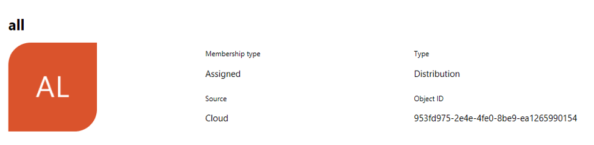
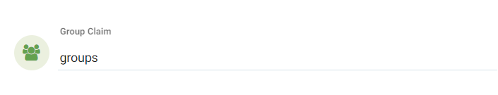

OpenID Connect Azure/Okta
Integración con OpenID Connect (OIDC) para Azure y Okta
Para habilitar la autenticación OpenID Connect, se requieren los ajustes de Emisor, ID de cliente y Secreto de cliente. Con la URL del emisor, SUSE® Security llamará a la API de descubrimiento para recuperar los puntos finales de Autorización, Token e Información del usuario.
Localiza la URI de redirección de OpenID Connect en la parte superior de la página de configuración de SUSE® Security OpenID Connect. Necesitarás copiar esta URI en los URIs de redirección de inicio de sesión para Okta y URLs de respuesta para Microsoft Azure.

Configuración de Microsoft Azure
En Azure Active Directory > Registros de aplicaciones > Nombre de la aplicación > Página de configuración, localiza la cadena de ID de la aplicación. Esto se utiliza para establecer el ID de cliente en SUSE® Security. El secreto de cliente se puede localizar en la configuración de Claves de Azure.

La URL del emisor toma el formato https://login.microsoftonline.com/{tenantID}/v2.0. Para localizar el tenantID, ve a menu:Azure Active Directory[Página de propiedades] y encuentra el ID de directorio, reemplázalo con el tenantID en la URL.

Si los usuarios están asignados a los grupos en el directorio activo, su pertenencia a grupos puede añadirse a la reclamación. Encuentra la aplicación en Azure Active Directory → Registros de aplicaciones y edita el manifiesto. Modifica el valor de "groupMembershipClaims" a "Grupo de aplicación". Hay un número máximo de grupos que se emitirán en un token. Si el usuario pertenece a un gran número de grupos ( > 200) y se utiliza el valor "Todos", el token no incluirá los grupos y la autorización fallará. Utilizar el valor "Grupo de aplicación" en lugar de "Todos" reducirá el número de grupos aplicables devueltos en el token.
Por defecto, SUSE® Security busca "grupos" en la reclamación para identificar la pertenencia del usuario a grupos. Si se utiliza otro nombre de reclamación, puedes personalizar el nombre de la reclamación en la página de Configuración de OpenID Connect de SUSE® Security.
La reclamación de grupo devuelta por Azure se identifica por el "ID de Objeto" en lugar del nombre. El ID de objeto del grupo se puede localizar en menu:Azure Active Directory[Grupos> Página del nombre del grupo]. Debes utilizar este valor para configurar el mapeo de roles basado en grupos en la Configuración de SUSE® Security →.

Configuración de Okta
Inicia sesión en tu cuenta de Okta.
En el menú de la izquierda, haz clic en “Aplicación → Aplicación"` En el panel central, haz clic en "`Create App Integration”:

Aparecerá un nuevo panel para seleccionar el “Sign-in method”:

Selecciona la opción “OIDC — OpenID Connect”.
Aparecerá un panel derivado, para la selección de “Application Type”:

Selecciona la opción “Native Application”.
El panel central mostrará ahora el formulario de Integración de Aplicaciones Nativas donde deberás completar los siguientes valores:
Para la sección de Configuración General:
App. Nombre de la Integración: Nombre para esta integración. Elige libremente cualquier nombre
Tipo de Concesión (marcar):
-
Código de Autorización
-
Token de Actualización
-
Contraseña del Propietario del Recurso
-
Implícito (híbrido)
Para la sección de URIs de redirección de inicio de sesión:
Ve a tu consola SUSE® Security y navega a “Settings” → “OpenId Connect Settings”. En la parte superior de la página, junto a la etiqueta “OpenID Connect Redirect URI” haz clic en “Copy to Clipboard”.

Esto copiará la URI de redirección a la memoria. Pégalo en su cuadro de texto correspondiente:

Para la sección de Asignaciones:
Selecciona “Allow everyone in your organization to access” para que esta integración esté disponible para todos en tu organización.

Luego haz clic en el botón de guardar en la parte inferior de la página.
Una vez que se guarden tus configuraciones generales, te llevará a la configuración de integración de tu nueva aplicación y se generará automáticamente un ID de cliente.
En la sección “Client Credentials”, haz clic en editar y modifica la sección “Client Authentication” de “Use PKCE (for public clients)” a “Use Client Authentication”, y pulsa guardar. Esto generará automáticamente un nuevo secreto que necesitaremos en los próximos pasos de configuración SUSE® Security:

Navega a la pestaña “Sign On” y edita la sección “OpenID Connect ID Token”: Cambia el emisor de “Dynamic (based on request domain)” al fijo “Okta URL”:

La consola de Okta puede operar en dos modos, Modo Clásico y Modo Desarrollador. En modo clásico, la URL del emisor se encuentra en la pestaña de Inicio de Sesión de la página de Aplicaciones de Okta. Para que la pertenencia del grupo del usuario se devuelva en la reclamación, necesitas añadir el ámbito "groups" en la página de configuración de OpenID Connect SUSE® Security:

En el Modo Desarrollador, Okta te permite personalizar las reclamaciones. Esto se hace en la página de API gestionando los Servidores de Autorización (navega al menú → Seguridad → API). La URL del emisor se encuentra en la pestaña de configuración de cada servidor de autorización:

Las reclamaciones son pares nombre/valor que contienen información sobre un usuario, así como metainformación sobre el servicio OIDC. En la sección “OpenID Connect ID Token”, puedes crear nuevas reclamaciones para los grupos del usuario y llevar la reclamación en el token de ID (un token de ID es un JSON Web Token, un medio compacto y seguro para representar reclamaciones que se transfieren entre dos partes, de modo que la información de identidad del usuario queda codificada directamente en el token y se puede verificar de forma definitiva para demostrar que no ha sido manipulado). Si se configura un ámbito específico, asegúrate de añadir el ámbito en la página de configuración de OpenID Connect SUSE® Security, para que la reclamación pueda incluirse después de que el usuario sea autenticado:

Por defecto, SUSE® Security busca "grupos" en la reclamación para identificar la pertenencia del usuario a grupos. Si se utiliza otro nombre de reclamación, puedes personalizar el nombre de la reclamación en la página de configuración de OpenID Connect de SUSE® Security. Para configurar las reclamaciones, edita la sección “OpenID Connect ID Token” como se muestra en la siguiente imagen:

En la página de integración de tu aplicación, navega a la pestaña “Assignments” y asegúrate de que tienes las asignaciones correspondientes listadas:

SUSE® Security Configuración de OpenID Connect
Configura la URL del emisor, el ID del cliente y el secreto del cliente en la página.

Después de que el usuario esté autenticado, se puede derivar el rol adecuado con la configuración de mapeo de roles basada en grupos. Para configurar el mapeo de roles basado en grupos,
-
Si el mapeo de roles basado en grupos no está configurado o no se pueden localizar los grupos coincidentes, al usuario autenticado se le asignará el rol predeterminado. Si el rol predeterminado está configurado como Ninguno, cuando falla el mapeo de roles basado en grupos, el usuario no podrá iniciar sesión.
-
Especifica una lista de grupos respectivamente en el mapa de roles de Administrador y Lector. La pertenencia a grupos del usuario se devuelve mediante las reclamaciones en el Token de ID después de que el usuario esté autenticado. Si se localiza el grupo coincidente, se asignará el rol correspondiente al usuario.
El grupo puede ser mapeado al rol de Administrador en SUSE® Security. Los usuarios individuales pueden ser 'promovidos' a un rol de Administrador Federado iniciando sesión como un administrador de clúster local, seleccionando al usuario con el Proveedor de Identidad 'OpenID' y editando su rol en Configuración → Usuarios/Roles.
Mapeo de Grupos a Roles y Espacios de Nombres
Por favor, consulta la sección Usuarios y Roles para saber cómo mapear grupos a roles preestablecidos y personalizados, así como a espacios de nombres en SUSE® Security.